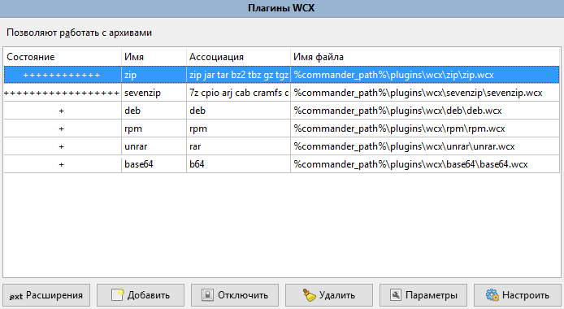
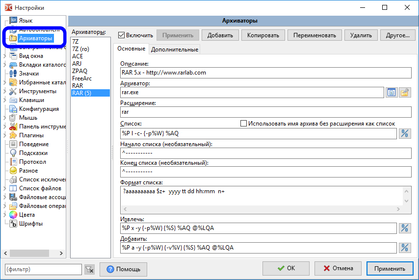
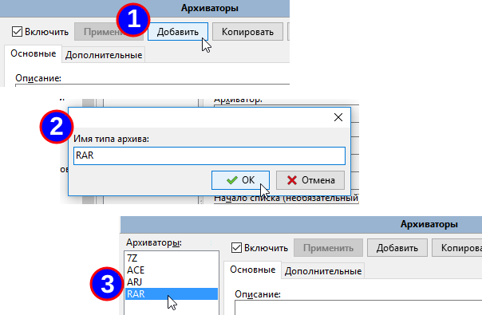
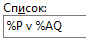
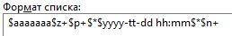
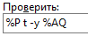
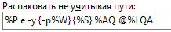

Double Commander может работать со сжатыми файлами, как если бы это были простые папки.
Например, если у нас в панели есть файл ZIP, мы можем просто выбрать его, нажать Enter и в панели будет показано содержимое этого файла так же, как если бы мы перешли в каталог.
Double Commander достаточно универсален, чтобы через собственный интерфейс использовать внешние программы для работы со сжатыми файлами. Приложение использует два разных принципа:
При попытке открыть архив Double Commander сначала проверяет список доступных архиваторных плагинов.
"Внутри" сжатого файла мы можем выполнять некоторые минимальные базовые функции, такие как просмотр файла, копирование его в другую панель и некоторые другие.
На изображении ниже показан пример открытия сжатого файла "help.rar":
После вызова команды просмотра (F3) или редактирования (F4), Double Commander извлечёт файл под курсором в системный каталог для временных файлов и откроет. После закрытия просмотрщика временный файл будет удалён. Если открытый в редакторе файл будет изменён, Double Commander предложит упаковать его обратно (если формат сжатых файлов и архиваторный плагин или внешний архиватор поддерживают такую возможность).
При использовании двойного щелчка мыши или нажатии Enter Double Commander покажет окно свойств упакованного файла:
В строке Архиватор отображается имя используемого архиваторного плагина или имя внешнего архиватора.
Кнопки:
Закрыть – закроет окно свойств.
Распаковать и выполнить – Double Commander извлечёт файл под курсором в системный каталог для временных файлов и вызовет действие по умолчанию из внутренних или системных файловых ассоциаций.
Выполнить, распаковав все – как предыдущее, но предварительно будет извлечено всё содержимое архива.
Double Commander позволяет настроить автоматическое открытие файла в ассоциированной программе напрямую, используйте <AutoExtractOpenMask>.
При закрытии Double Commander удаляет все временные файлы.
Мы можем настроить Double Commander на использование "архиваторных плагинов", которые помогут справиться со сжатым файлом.
Дистрибутив Double Commander уже включает в себя некоторые из подобных WCX-плагинов.
Кроме того, в Интернете мы можем найти ряд других WCX-плагинов.
Также помните, что плагины, написанные для работы с Total Commander, должны работать и с Double Commander.
Чтобы установить, включить или настроить их, нам нужно зайти в Настройки > Параметры... > Плагины > Плагины WCX:

Пожалуйста, имейте в виду, что для некоторых форматов поддерживается только чтение, то есть доступны только просмотр содержимого, распаковка и тестирование.
Иногда нужного плагина просто не существует.
Или по какой-то причине, такое иногда может случиться, мы хотим явно использовать внешний архиватор в силу функционального преимущества или чего-то, что не умеет обычный архиваторный плагин.
Double Commander использует механизм работы с внешними архиваторами аналогичный плагину MultiArc для Total Commander.
Чтобы было понятнее, использование внешнего архиватора можно описать следующим образом: это способ запустить архиватор, но заставить Double Commander управлять им, передавая исполняемому файлу архиватора различные параметры, которые нам понадобятся для интеграции с приложением.
Оставшаяся часть этой страницы будет посвящена вопросу настройки Double Commander для использования внешнего архиватора.
Предположим, мы хотим использовать "rar.exe" для работы с архивами RAR.
Как можно догадаться, необходимо настроить вызов внешнего архиватора для того, чтобы мы могли...
Все эти действия будут сконфигурированы в окне настроек Double Commander в разделе "Архиваторы":

Все настройки сохраняются в файл multiarc.ini.
Давайте рассмотрим универсальные возможности, предлагаемые нам Double Commander для использования внешнего упаковщика.
Мы не будем описывать здесь, в начале, каждое поле, вместо этого подробно, шаг за шагом, разберём пример интеграции внешнего архиватора "rar.exe".
Нажимаем кнопку "Добавить", указываем имя архиватора и теперь мы готовы его настроить.

Далее нам нужно добавить описание архиватора, путь к исполняемому файлу, а затем расширение файла, без точки.
Если у нас более одного возможного расширения, просто перечисляем их через запятую, без пробела.

Примечание: Double Commander поддерживает двойные расширения (например, "tar.gz", "tar.xz" и так далее), они должны размещаться в начале списка расширений (то есть "tar.gz" до "gz").
Как упоминалось ранее, нам нужно настроить вызов исполняемого файла внешнего архиватора для необходимых нам действий.
Чтобы помочь в этом, Double Commander предлагает нам ряд переменных, ниже представлена таблица доступных:
| Определение команды | |
|---|---|
| Переменная | Что означает |
%P | Длинное имя архиватора (как в поле "Архиватор") |
%p | Короткое имя архиватора (как в поле "Архиватор") |
%A | Длинное имя файла архива |
%a | Короткое имя файла архива |
%L | Список файлов. Это файл, содержащий имена файлов, которые будут обрабатываться внешним архиватором. Имена файлов длинные. |
%l | Список файлов с короткими именами файлов |
%F | Имя одного файла для обработки. Архиватор будет вызван несколько раз, до тех пор, пока не будут обработаны все файлы. Эта переменная должна использоваться только в том случае, если архиватор не поддерживает работу со списком файлов в командной строке. |
%V | Размер тома (для многотомного архива) |
%W | Пароль |
%E<errorlevel> | Максимальный допустимый код завершения (errorlevel, код выхода). Например, %E2 означает, что принимаются коды завершения 0, 1 и 2. Эта переменная может быть указана в любом месте команды. Если она не используется, то только код завершения 0 считается успешным. |
%O<модификатор> | По умолчанию MultiArc конвертирует вывод архиватора из кодировки OEM (DOS) в UTF-8. Используйте её для переопределения кодировки, возможные модификаторы смотрите ниже. Может использоваться только с командой "Список". |
%R | Целевая поддиректория В архиве |
{} | Если какая-то переменная заключена в фигурные скобки, то она будет добавлена только если эта переменная содержит что-либо, т.е. не пустая |
%S | Зависит от режима, устанавливается в диалоге настройки, MultiArc будет запрашивать у пользователя дополнительные параметры командной строки, которые должны быть размещены на месте %S |
Не беспокойтесь, ниже мы покажем пример для лучшего понимания.
Эти модификаторы могут быть указаны сразу же после переменных, без пробелов.
| Модификаторы переменных | |
|---|---|
| Буква модификатора | Что означает |
F | включить в список только файлы (применимо к переменным %L и %l) |
Q | брать в кавычки имена с пробелами |
q | брать в кавычки все имена |
W | использовать только имя, без пути |
P | использовать только путь, без имени |
A | использовать системную кодировку ANSI в Windows или системную кодировку по умолчанию в Unix-подобных системах (в дистрибутивах GNU/Linux это обычно UTF-8); может использоваться с переменными %L и %O |
U | использовать кодировку UTF-8; может использоваться с переменными %L и %O |
И снова не волнуйтесь, пример будет ниже.
Если мы хотим, чтобы Double Commander работал с архивами, как если бы это был каталог с файлами, у нас должна быть возможность получить список файлов в архиве.
На данный момент нам не нужно его распаковывать! Нет, это лишь вопрос получения списка его содержимого, чтобы Double Commander нам его показал.
В нашем примере "rar.exe", смотрим его документацию и видим команду "v", которая позволит нам использовать консольное приложение "rar.exe" для получения списка файлов внутри архива:

Значит, для получения списка нам необходимо вызвать "rar.exe" с командой "v" и именем архива.
Сначала проверим это вручную, с файлом "E:\Temp\just.rar"

Итак, теперь нам нужно настроить действие "Список", чтобы сообщить Double Commander, как вызвать "rar.exe" для получения содержимого сжатого файла.
Чтобы сделать это, запишем то же, но уже используя описанные выше переменные и модификаторы.
Вот как это будет выглядеть:

У нас получилось %P v %AQ:
%P будет заменено нашим исполняемым файлом, то есть "E:\Program Files\WinRAR\Rar.exe".v останется как есть, так как является командой архиватора "rar.exe" для просмотра списка файлов.%A – это имя архива, мы добавляем к нему Q, чтобы указать Double Commander на необходимость взять имя в кавычки, если в нём есть пробелы.Таким образом, всё это для того, чтобы вызвать внешний архиватор с подходящими параметрами.
Будет использовано при вызове внутренней команды cm_OpenArchive.
Несколько слов об опции "Использовать имя архива без расширения как список": Эта опция предназначена для архивов, которые могут содержать только один файл и имя файла равно имени архива без расширения (Bzip2, XZ и другие). Такие сжатые файлы как правило не содержат имя оригинального файла.
Теперь архиватор будет выводить список файлов внутри архивов.
Но это еще не всё! Далее нам нужно разобрать вывод архиватора, приведя его к виду, необходимому для показа в файловой панели.
Как мы видели на изображении выше, "rar.exe" выводит не просто голые данные.
Есть некоторая информация, которую мы должны убрать, чтобы сохранить только необходимое.
К счастью, мы можем указать магическую строку, с которой Double Commander начнёт анализ последующих строк.
Кроме того, мы можем указать магическую строку, останавливающую разбор данных.
Поскольку у нас есть пунктирная линия до и после, довольно просто установить эти два параметра:

В случае, если внешний архиватор выводит данные сразу же, без дополнительных строк, просто оставьте эти поля пустыми.
Символ карет "^" указывает, что магическая строка располагается в самом начале строки и никак иначе.
Если магическая строка, останавливающая разбор данных, может быть спутана с именем файла, то Double Commander может прекратить анализ слишком рано, поэтому, когда возможно, полезно уточнить, что эта строка должна начинаться с самого начала строки.
Есть смысл установить "Конец списка" как можно дальше, но сохраняя его функцию: лучше и безопаснее убедиться, что в будущем не будет путаницы.
Теперь Double Commander точно знает, какие данные анализировать для получения списка файлов внутри архива.
Было бы проще жёстко задать в приложении порядок анализа вывода "rar.exe", но Double Commander этого не делает.
Вместо этого он чрезвычайно универсален, предоставляя нам возможность полностью настроить анализ!
Это может быть немного сложнее, но, с другой стороны, это даёт нам максимальную гибкость, поскольку так мы можем использовать внешние архиваторы, о которых разработчики Double Commander даже не знали!
Для извлечения информации из каждой строки списка файлов мы будем использовать шаблоны.
Таблица ниже содержит выражения стандартного синтаксиса разбора вывода и, как мы увидим в примере, стандартный синтаксис преимущественно основана на прямой подстановке.
Когда это возможно, мы будем стараться использовать этот синтаксис, поскольку он работает быстрее, чем описанный далее расширенный.
| Стандартный синтаксис разбора вывода | |
|---|---|
| Выражение | Что означает |
n | имя файла |
z | размер несжатого файла |
c | описание файла |
p | размер сжатого файла |
d | день |
t | месяц |
TTT | трёхбуквенное имя месяца (Jan, Feb, Mar, ...) |
y | год |
h | часы |
H | буква-модификатор часов: a - время до полудня (a.m.), p - время после полудня (p.m.) |
m | минуты |
s | секунды |
a | атрибуты |
e | расширение файла |
? | пропустить один символ |
* | пропустить до первого пробела или конца строки |
+ | для имён файлов, расположенных в конце строки: использовать все символы до конца строки |
Таким образом, вся суть заключается в том, чтобы использовать доступные выражения из предыдущей таблицы для создания шаблона "Формат списка", который в свою очередь укажет Double Commander, как этим архиватором получить содержимое архива: каталоги и имена файлов, размеры файлов, атрибуты, даты и т.д.
Для удобства скопируем строку текста, полученного нами ранее при ручном запуске архиватора, в текстовый редактор, а строкой ниже напишем соответствующий шаблон из выражений предыдущей таблицы.
Вот что у нас получится:

Итак, мы написали шаблон:
Теперь выделим наш архив "just.rar" в панели, нажмём Enter, чтобы войти в него как в каталог, и видим, что показ содержимое файла работает (за исключением последнего файла...):

Следующая таблица представляет нам расширенный синтаксис разбора вывода внешнего архиватора.
Использование элементов этого синтаксиса требует немного больше времени для обработки, поэтому используйте их только тогда, когда иначе невозможно разрешить проблемную ситуацию.
Пример его использования будет приведён в следующем разделе.
| Расширенный синтаксис разбора | |
|---|---|
| Выражение | Что означает |
+ | после имени не в конце строки: использовать все символы до следующего пробела |
+ | после любого числового поля: использовать все цифры до первого нецифрового символа |
n+ | имя файла: использовать все символы до конца строки |
z+ | размер несжатого файла: использовать все цифры до первого нецифрового символа |
p+ | размер сжатого файла: использовать все цифры до первого нецифрового символа |
$ | пропустить все пробелы/табуляции до следующего символа или до конца строки |
\ | данные продолжаются на следующей строке (поддерживается максимум 2 строки) |
x | в точности один пробел, если на этом месте находится другой символ, то вся строка игнорируется |
z=1024 | размер несжатого файла, умноженный на указанное значение (в данном случае: 1024) |
p=1024 | размер сжатого файла, умноженный на указанное значение (в данном случае: 1024) |
Пример со стандартным синтаксисом оказался хорош, но не идеален.
В некоторых случаях он будет работать неправильно.
С огромными файлами размер будет намного шире, чем ожидалось, поэтому наша первая попытка не удалась.
Посмотрите на наш файл 007 Skyfall.TS.
Мы видим, что отображается неверная информация. Давайте сравним:

Видим ошибки в имени файла, размере, дате и т.д.
Давайте для разрешения этой проблемной ситуации воспользуемся элементами расширенного синтаксиса.
Вот что можно использовать, даже если выводимое поле не всегда *точно* одной и той же ширины:

Немного сложнее, но очень легко описать, и в конце мы увидим, что всё это не так уж сложно.
Раскрашенное описание поможет нам визуализировать каждый маленький блок разбора:

Итак, используя эту строку формата списка, мы можем проверить снова и теперь у нас есть правильный результат даже для огромного файла:

Это строка вызова внешнего архиватора для извлечения файла или всех файлов из выбранного архива, будем использовать те же переменные и их модификаторы.
Продолжаем работу с "rar.exe", из документации мы знаем, что для извлечения файла или группы файлов используется команда "x".
С "rar.exe" мы также можем указать в параметре список файлов для извлечения.
Воспользуемся предлагаемой Double Commander переменной %L, которая создаст текстовый файл с выделенными для извлечения файлами, и передадим его как параметр.
Ниже представлена строка для извлечения на примере "rar.exe":

Описание этого примера:
Итак, эта команда будет вызываться, когда мы пожелаем извлечь всё содержимое выделенного архива, только один файл из него и т.д.
Когда мы "входим" в архив как в каталог и нажимаем F3, чтобы просмотреть содержимое файла внутри архива, действие "Извлечь" происходит в фоне, выбранный файл извлекается с использованием этого шаблона в системный каталог для временных файлов, а уже оттуда передаётся просмотрщику.
Будет использовано при вызове внутренней команды cm_ExtractFiles.
Это строка вызова внешнего архиватора для "упаковки" файла или всех выделенных файлов в архив, будем использовать те же переменные и их модификаторы.
Продолжаем работу с "rar.exe", из документации мы знаем, что для создания архива или добавления файла или группы файлов в существующий архив используется команда "a".
С "rar.exe" мы также можем указать в параметре список файлов для добавления.
Воспользуемся предлагаемой Double Commander переменной %L, которая создаст текстовый файл с выделенными в активной панели файлами, и передадим его как параметр.
Ниже представлена строка для создания или добавления в архив на примере "rar.exe":

Описание этого примера:
Итак, эта команда будет вызвана, когда мы выберем файл или группу файлов и пожелаем упаковать с помощью внешнего архиватора "RAR".
Будет использовано при вызове внутренней команды cm_PackFiles.
Некоторые форматы сжатых файлов поддерживают возможность удаления файла внутри архива.
Если эта возможность поддерживается, мы можем в Double Commander настроить для этого вызов внешнего архиватора.
То есть, когда эта команда будет использоваться: входим в архив, выбираем внутри него файл и удаляем его.
Обратите внимание, что это действие находится на второй вкладке настроек внешнего архиватора.
Продолжая наш пример с "rar.exe", вот как мы можем настроить это действие:

Описание этого примера:
Некоторые архиваторы позволяют проверить целостность файла архива, чтобы убедиться, что в них нет ошибки, что ничего не повреждено.
Если эта возможность поддерживается, мы можем в Double Commander настроить для этого вызов внешнего архиватора.
Продолжая наш пример с "rar.exe", вот как мы можем настроить это действие:

Описание этого примера:
Будет использовано при вызове внутренней команды cm_TestArchive.
Если ошибок нет, окно тестирования будет закрыто, в противном случае появится следующее сообщение:

Если архив содержит каталоги, то при вызове внутренней команды cm_ExtractFiles для распаковки по умолчанию архиватор будет воссоздавать структуру каталогов.
Но иногда бывает необходимо извлечь все файлы без сохранения структуры каталогов и некоторые архиваторы поддерживают такую возможность.
Для этого используется действие "Распаковать не учитывая пути".
Продолжая наш пример с "rar.exe", вот как мы можем настроить это действие:

Описание этого примера:
Такой способ можно выбрать в диалоговом окне распаковки архива:
Некоторые архиваторы могут создавать "самораспаковывающиеся" сжатые файлы (SFX-архивы).
Это означает, что в результате мы получим исполняемый файл, при запуске которого будет извлечено его содержимое.
Это полезно, когда хотим быть уверены, что у пользователей не будет проблем с распаковкой архива: ничего не нужно устанавливать, просто запустить и получить распакованные файлы!
Как правило, это действие зачастую настраивается так же, как действие "Добавить", но с добавлением параметра, указывающего, что нужен самораспаковывающийся архив.
Так обстоит дело, например, с "rar.exe". Вот как мы можем настроить это действие:

Описание этого примера:
Самораспаковывающийся архив создаётся, как и обычный архив, с помощью внутренней команды cm_PackFiles, но в появившемся окне нужно отметить опцию "Самораспаковывающийся архив".
Мы можем настроить Double Commander таким образом, чтобы он игнорировал расширение файла и пытался определить сжатый файл по его содержимому, а затем вызывал описанные выше соответствующие команды получения списка и распаковки.
Для этого мы будем использовать внутреннюю команду cm_OpenArchive.
Примером использования может быть открытие самораспаковывающегося EXE-файла и получение содержимого, не запуская его.
Другим примером может быть просмотр содержимого архива, который сохраняется с иным, чем обычный архив, расширением файла, примером таких файлов могут быть, например, DOCX-файлы Microsoft Word, которые на самом деле представляют собой сжатые файлы ZIP.
Мы можем настроить Double Commander для обнаружения сигнатуры выбранного файла (шаблона данных в определённом месте файла), чтобы он был распознан и передан соответствующему архиватору.
Мы будем называть эти шаблоны "ID" и этот раздел посвящён их настройке.
Для этого у нас есть три опции: ID, Смещение ID и Диапазон поиска ID.
Мы укажем Double Commander, где нужно искать определённый ID для распознавания типа архива, а затем настроим команды, специфичные для этого типа архива.
Начнем с простого примера. На следующем изображении показано начало архива 7-Zip в шестнадцатеричном виде:

Посмотрев другие архивы 7-Zip, мы видим, что первые шесть байта – это всегда последовательность 0x37 0x7A 0xBC 0xAF 0x27 0x1C.
Итак, извлечём из этого пользу: столкнувшись с файлом, который начинается с этой последовательности, Double Commander предположит, что этот файл является архивом 7-Zip.
Настраиваем:

Мы должны записать ID группами по два шестнадцатеричных числа, разделяя их пробелами.
Смещение ID (необязательный) – это позиция ID в архиве. Если не указано, поиск ID будет идти с начала файла. Мы можем задать смещение со знаком "-" (минус): в этом случае поиск будет идти с конца файла. Специальное значение <SeekID> ограничивает поиск ID, если не найдено числовое значение смещения ID. Диапазоны поиска "0 .. размер файла" или "0 .. Диапазон поиска ID" (в зависимости от того, какое будет меньше). Значения могут быть указаны в десятеричной (12345) или шестнадцатеричной (0x3039) системе счисления. Отрицательные значения в шестнадцатеричном виде обозначаются как 0xFFFFFFFF (-1 в десятичном).
Диапазон поиска ID (необязательный) – это число байт, в которых Double Commander будет искать ID, если задано <SeekID>. По умолчанию 1 МБ.
Примечание: Все вышеуказанные параметры могут иметь несколько значений, в таком случае можно перечислить их через запятую.
В нашем примере с архивом 7-Zip будет достаточно указать ID и смещение ID (0, потому что в начале файла).
Теперь, когда мы вызовем команду cm_OpenArchive, Double Commander просканирует содержимое файла, найдёт последовательность "0x37 0x7A 0xBC 0xAF 0x27 0x1C" по смещению 0, и будет обрабатывать его как тип 7Z, с соответствующими командами и параметрами для получения списка, распаковки и т.д.
В большинстве случаев нет необходимости изучать файлы в шестнадцатеричном представлении: сигнатуру файла можно найти в спецификации формата или использовать существующие списки, базы или утилиты (например, эта страница Википедии или база данных MIME от FreeDesktop.org).
Описанных выше шагов обычно достаточно для использования внешнего архиватора, но на всякий случай у нас есть ещё пара опций:
Показывать консольный вывод – Если включено, Double Commander будет выводить (построчно) результат работы внешнего архиватора и парсера в окно протокола.
Режим отладки – Аналогично предыдущей опции, но также результат работы будет выводиться в отладочные сообщения Double Commander (смотрите описание --debug-log). В этом случае временный файл со списком файлов (%L в нашем примере) не будет автоматически удаляться после завершения операции.
Если отображение окна протокола отключено в настройках, то оно будет показано принудительно и скрыто при закрытии Double Commander. Сообщения не будут сохраняться в файл протокола.
Это меню содержит несколько дополнительных функций:
Автонастройка – Double Commander проверит все исполняемые файлы архиваторов: если файл будет найден, то программа автоматически добавит его полный путь и включит архиватор, в противном случае архиватор будет отключен.
Отменить изменения – сбрасывает все несохранённые изменения настроек.
Сортировать архиваторы – сортирует список архиваторов по алфавиту.
Запретить все и Разрешить все – включают или отключают все архиваторы.
Экспорт... и Импорт... – позволяют экспортировать и импортировать настройки архиваторов (все архиваторы или часть из них).
По умолчанию файлы, расширения которых указаны в настройках WCX-плагинов и внешних архиваторов, открываются как папки. Для открытия их в ассоциированном приложении мы можем использовать пункт "Открыть" в контекстном меню файла (но в этом случаю будут использоваться только системные файловые ассоциации) или мы можем добавить нужное действие в подменю "Команды".
Чтобы использовать клавишу Enter или двойной щелчок мышью, мы должны изменить настройки.
Мы можем просто удалить расширение из настроек, но в этом случае станут недоступны команды cm_OpenArchive и cm_ExtractFiles. Другой способ:
Если используется WCX-плагин, то мы можем открыть настройки плагина, выбрать расширение и включить флаг "Показывать как нормальные файлы (скрывать значок архива)".
Если для распаковки файлов используется внешний архиватор, то мы можем заполнить поля для использования ID и не указывать расширение файлов.
Для таких файлов Double Commander будет использовать ассоциированный значок вместо общего значка архива.